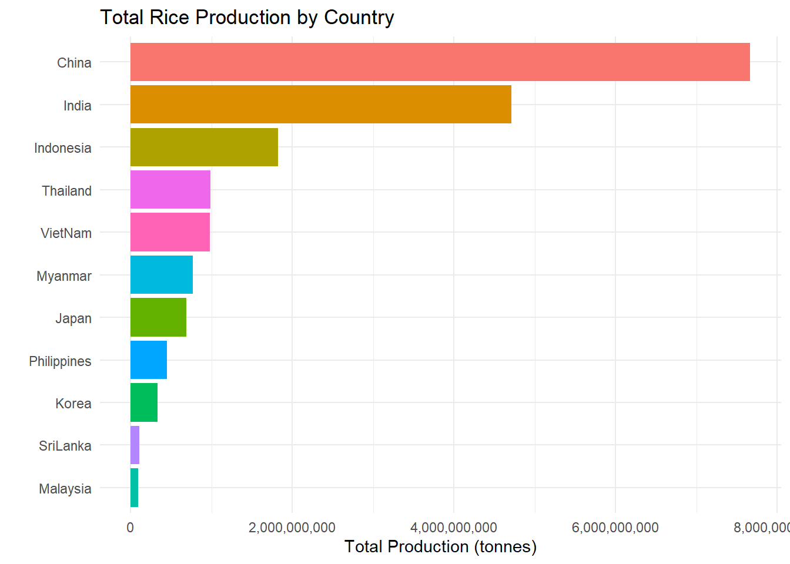

Code
pacman::p_load(scales, viridis, lubridate, ggthemes,
gridExtra, readxl, knitr, data.table,
CGPfunctions, ggHoriPlot, tidyverse)By the end of this hands-on exercise, I will be creating the followings data visualisation by using R packages:
plotting a calender heatmap by using ggplot2 functions,
plotting a cycle plot by using ggplot2 function,
plotting a slopegraph
plotting a horizon chart
Installing and launching the following R packages: scales, viridis, lubridate, ggthemes, gridExtra, readxl, knitr, data.table and tidyverse.
Packages:
pacman::p_load(scales, viridis, lubridate, ggthemes,
gridExtra, readxl, knitr, data.table,
CGPfunctions, ggHoriPlot, tidyverse)In this section, I will be practicing to plot a calender heatmap programmatically by using ggplot2 package.

By the end of this section, I will:
For the purpose of this hands-on exercise, eventlog.csv file will be used. This data file consists of 199,999 rows of time-series cyber attack records by country.
First, I will use the code chunk below to import eventlog.csv file into R environment and called the data frame as “attacks”.
attacks <- read_csv("data/eventlog.csv")It is always a good practice to examine the imported data frame before further analysis is performed.
For example, kable() can be used to review the structure of the imported data frame.
kable(head(attacks))| timestamp | source_country | tz |
|---|---|---|
| 2015-03-12 15:59:16 | CN | Asia/Shanghai |
| 2015-03-12 16:00:48 | FR | Europe/Paris |
| 2015-03-12 16:02:26 | CN | Asia/Shanghai |
| 2015-03-12 16:02:38 | US | America/Chicago |
| 2015-03-12 16:03:22 | CN | Asia/Shanghai |
| 2015-03-12 16:03:45 | CN | Asia/Shanghai |
There are three columns, namely timestamp, source_country and tz.
Step 1: Deriving weekday and hour of day fields
Before we can plot the calender heatmap, two new fields namely wkday and hour need to be derived. In this step, we will write a function to perform the task.
make_hr_wkday <- function(ts, sc, tz) {
real_times <- ymd_hms(ts,
tz = tz[1],
quiet = TRUE)
dt <- data.table(source_country = sc,
wkday = weekdays(real_times),
hour = hour(real_times))
return(dt)
}Step 2: Deriving the attacks tibble data frame
wkday_levels <- c('Saturday', 'Friday',
'Thursday', 'Wednesday',
'Tuesday', 'Monday',
'Sunday')
attacks <- attacks %>%
group_by(tz) %>%
do(make_hr_wkday(.$timestamp,
.$source_country,
.$tz)) %>%
ungroup() %>%
mutate(wkday = factor(
wkday, levels = wkday_levels),
hour = factor(
hour, levels = 0:23))Beside extracting the necessary data into attacks data frame, mutate() of dplyr package is used to convert wkday and hour fields into factor so they’ll be ordered when plotting
Table below shows the tidy tibble table after processing.
kable(head(attacks))| tz | source_country | wkday | hour |
|---|---|---|---|
| Africa/Cairo | BG | Saturday | 20 |
| Africa/Cairo | TW | Sunday | 6 |
| Africa/Cairo | TW | Sunday | 8 |
| Africa/Cairo | CN | Sunday | 11 |
| Africa/Cairo | US | Sunday | 15 |
| Africa/Cairo | CA | Monday | 11 |
grouped <- attacks %>%
count(wkday, hour) %>%
ungroup() %>%
na.omit()
ggplot(grouped,
aes(hour,
wkday,
fill = n)) +
geom_tile(color = "white",
size = 0.1) +
theme_tufte(base_family = "Helvetica") +
coord_equal() +
scale_fill_gradient(name = "# of attacks",
low = "sky blue",
high = "dark blue") +
labs(x = NULL,
y = NULL,
title = "Attacks by weekday and time of day") +
theme(axis.ticks = element_blank(),
plot.title = element_text(hjust = 0.5),
legend.title = element_text(size = 8),
legend.text = element_text(size = 6) )Then we can simply group the count by hour and wkday and plot it, since we know that we have values for every combination there’s no need to further preprocess the data.
Challenge: Building multiple heatmaps for the top four countries with the highest number of attacks.

Step 1: Deriving attack by country object
In order to identify the top 4 countries with the highest number of attacks, I required to do the followings:
attacks_by_country <- count(
attacks, source_country) %>%
mutate(percent = percent(n/sum(n))) %>%
arrange(desc(n))Step 2: Preparing the tidy data frame
In this step, I will extract the attack records of the top 4 countries from attacks data frame and save the data in a new tibble data frame (i.e. top4_attacks).
top4 <- attacks_by_country$source_country[1:4]
top4_attacks <- attacks %>%
filter(source_country %in% top4) %>%
count(source_country, wkday, hour) %>%
ungroup() %>%
mutate(source_country = factor(
source_country, levels = top4)) %>%
na.omit()Step 3: Plotting the Multiple Calender Heatmap by using ggplot2 package.
ggplot(top4_attacks,
aes(hour,
wkday,
fill = n)) +
geom_tile(color = "white",
size = 0.1) +
theme_tufte(base_family = "Helvetica") +
coord_equal() +
scale_fill_gradient(name = "# of attacks",
low = "sky blue",
high = "dark blue") +
facet_wrap(~source_country, ncol = 2) +
labs(x = NULL, y = NULL,
title = "Attacks on top 4 countries by weekday and time of day") +
theme(axis.ticks = element_blank(),
axis.text.x = element_text(size = 7),
plot.title = element_text(hjust = 0.5),
legend.title = element_text(size = 8),
legend.text = element_text(size = 6) )In this section, I will attempt to plot a cycle plot showing the time-series patterns and trend of visitor arrivals from Vietnam programmatically by using ggplot2 functions.

For the purpose of this hands-on exercise, arrivals_by_air.xlsx will be used.
The code chunk below imports arrivals_by_air.xlsx by using read_excel() of readxl package and save it as a tibble data frame called air.
air <- read_excel("data/arrivals_by_air.xlsx")Next, two new fields called month and year are derived from Month-Year field.
air$month <- factor(month(air$`Month-Year`),
levels=1:12,
labels=month.abb,
ordered=TRUE)
air$year <- year(ymd(air$`Month-Year`))Vietnam <- air %>%
select(`Vietnam`,
month,
year) %>%
filter(year >= 2010)The code chunk below uses group_by() and summarise() of dplyr to compute year average arrivals by month.
hline.data <- Vietnam %>%
group_by(month) %>%
summarise(avgvalue = mean(`Vietnam`))The code chunk below is used to plot the cycle plot as shown in Slide 12/23.
ggplot() +
geom_line(data = Vietnam,
aes(x = year,
y = `Vietnam`,
group = month),
colour = "black") +
geom_hline(data = hline.data,
aes(yintercept = avgvalue),
linetype = "dashed",
colour = "red",
size = 0.5) +
facet_grid(~month) +
labs(title = "Visitor arrivals from Vietnam by air, Jan 2010-Dec 2019",
x = "",
y = "No. of Visitors") +
theme_minimal(base_family = "Helvetica") +
theme(axis.text.x = element_text(angle = 90, hjust = 1, size = 8))In this section I will plot a slopegraph by using R.
Before getting start, ensure that CGPfunctions has been installed and loaded onto R environment. Then, refer to Using newggslopegraph to learn more about the function. Lastly, read more about newggslopegraph() and its arguments by referring to this link.
Import the rice data set into R environment by using the code chunk below.
rice <- read_csv("data/rice.csv")Next, code chunk below will be used to plot a basic slopegraph as shown below.
rice %>%
mutate(Year = factor(Year)) %>%
filter(Year %in% c(1961, 1980)) %>%
newggslopegraph(Year, Yield, Country,
Title = "Rice Yield of Top 11 Asian Counties",
SubTitle = "1961-1980",
Caption = "Prepared by: Andre Ong Jia Kang")For effective data visualisation design, factor() is used convert the value type of Year field from numeric to factor.
I will be exploring the below additional plots for the Rice dataset.
Main purpose will be to visualize the 1) Rice production & 2) Yield over the years or countries.
For effective data visualization, simple graphs can tell a story instead of complicated ones.
pacman::p_load(ggplot2, readr, dplyr, scales) ggplot(rice, aes(x = Year, y = Country, fill = Production)) +
geom_tile(color = "white") +
scale_fill_viridis(option = "C", labels = comma) +
labs(
title = "Heatmap of Rice Production",
x = "Year",
y = ""
) +
theme_minimal() +
theme(
axis.text.y = element_text(size = 7),
panel.grid = element_blank()
)Based on the colour, this shows that China has the highest amount of rice production
ggplot(rice, aes(x = Year, y = Production, color = Country, group = Country)) +
geom_line(size = 1) +
labs(
title = "Rice Production Over Time",
x = "Year",
y = "Production (tonnes)"
) +
scale_x_continuous(breaks = pretty_breaks()) +
theme_minimal()The bottom few countries in the plot are hard to deduce the order. Let’s try to use bargraph to understand it further.

rice %>%
group_by(Country) %>%
summarize(TotalProd = sum(Production, na.rm = TRUE)) %>%
arrange(desc(TotalProd)) %>%
ggplot(aes(x = reorder(Country, TotalProd), y = TotalProd, fill = Country)) +
geom_col(show.legend = FALSE) +
coord_flip() +
labs(
title = "Total Rice Production by Country",
x = "",
y = "Total Production (tonnes)"
) +
scale_y_continuous(labels = comma) +
theme_minimal()The bar graph clearly shows the distinct difference and order between the countries and the amount of rice produced.
#| code-fold: false
#| code-summary: "Code"
#| eval: false
# 2. Cycle plot: group years into decades and show within-decade patterns
rice_cycle <- rice %>%
mutate(
Decade = paste0(floor((Year - 1) / 10) * 10, "s"),
YearInDecade = Year - as.numeric(substr(Decade, 1, 4))
) %>%
group_by(Decade, Year, YearInDecade) %>%
summarize(TotalProd = sum(Production, na.rm = TRUE), .groups = "drop")
ggplot(rice_cycle, aes(
x = Year - as.numeric(substr(Decade, 1, 4)),
y = TotalProd,
color = Decade,
group = Decade
)) +
geom_line(size = 1.2) +
labs(
title = "Cycle Plot: Rice Production by Decade",
x = "Year within Decade",
y = "Total Production (tonnes)"
) +
scale_x_continuous(breaks = 0:10) +
scale_y_continuous(labels = comma) +
theme_minimal() +
theme(legend.title = element_blank())
This trend shows that countries have produced more than 2.5x the total production of rice from 1960s to 2000s.

ggplot(rice, aes(x = Year, y = Yield, color = Country, group = Country)) +
geom_line(linewidth = 1.2) +
scale_y_continuous(labels = label_comma()) +
labs(
title = "Rice Yield by Country (1961–1980)",
subtitle = "Year: 1960 to 1980",
x = "Year", y = "Yield (tonnes per hectare)",
caption = "Animated line plot using gganimate"
) +
theme_minimal() +
theme(legend.position = "bottom")It’s abit hard to visualise with line graph, a boxplot might be more suitable for this instead.
ggplot(rice, aes(x = Country, y = Yield, fill = Country)) +
geom_boxplot(outlier.alpha = 0.4) +
coord_flip() +
labs(
title = "Distribution of Rice Yield by Country",
x = "",
y = "Yield (tonnes/ha)"
) +
theme_minimal() +
theme(legend.position = "none")The boxplot accurately shows the spread of yield of each country. Based on the plot, u can find that Korea, Japan & China are the top 3 countries for Yield.